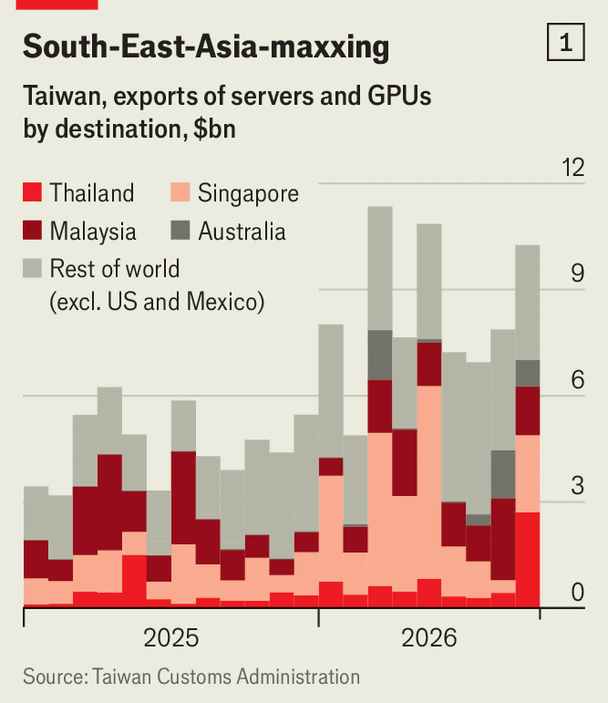
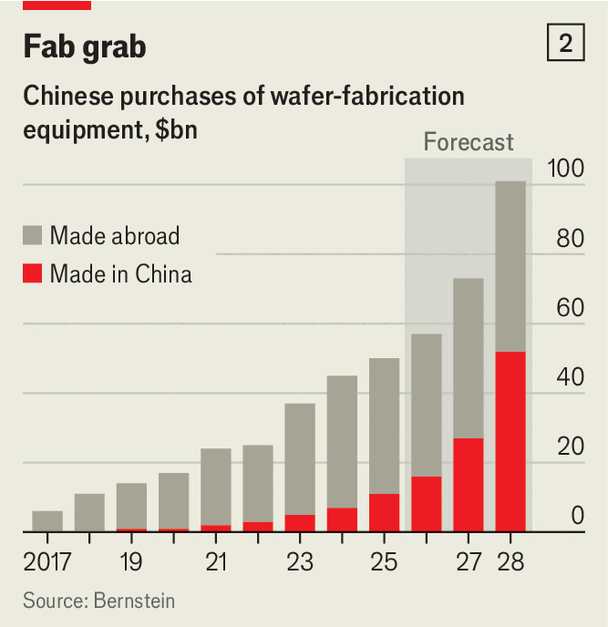

“除了美国，谁也别想拿到它们。”去年，唐纳德·特朗普这样形容英伟达最先进的芯片——在开发超级人工智能的竞赛中，这是不可或缺的工具。为兑现这一承诺，他的政府维持了限制某些类型半导体销售的规定。一位共和党议员说，任何松懈都相当于把武器级铀交给伊朗一样愚蠢。
然而事实证明，一直以来都有大量英伟达最精良的芯片流向中国，或者流向那些让中国人工智能企业用上这些芯片的中间商。尽管美国现在正试图堵住这个筛子，中国获取最新技术的努力仍在以其他方式继续。更重要的是，中国自己的芯片制造业进步如此之快，可能很快让美国的管制变得毫无意义。
泄漏的规模因英伟达老板黄仁勋的倒台而暴露。在他与一名疑似中国特工黄爱丽丝发生婚外情期间，她所供职的Megaspeed成了东南亚最大的英伟达芯片买家。这些芯片中很多似乎最终流入中国，违反了美国法规；另一些则在为本地区的数据中心供电，服务中国客户——这种安排此前是合法的，尽管本周美国官员匆忙修改规则加以限制。中国科技巨头阿里巴巴既是Megaspeed最大的客户，也是其最大的债权人之一。
自美国2020年首次限制先进芯片出口以来，中国企业就不断设计出变化多端的变通办法来获取“算力”。中国科技巨头华为当年被美国制裁单独点名，切断了它与台湾最大芯片制造商台积电的供应关系。然而当研究机构TechInsights拆解华为面向人工智能的昇腾910B处理器时，发现里面用的是台积电制造的芯片。咨询公司SemiAnalysis称，华为通过中国芯片设计公司算能（Sophgo）购买了价值约5亿美元的台积电先进芯片（算能表示与华为没有业务往来）。
当限制扩大到所有中国企业后，许多人转向走私。2024年《华尔街日报》详细描述了一个“几乎不加掩饰”的芯片贩运网络，其中包括一名收了600美元、把英伟达芯片塞进行李箱带入中国的学生。但这不只是小打小闹的走私。美国司法部指控美国服务器制造商超微（Supermicro）的一名联合创始人及另外两名男子，在2024至2025年间合谋将价值数十亿美元的人工智能设备偷运进中国（该联合创始人否认指控）。三人据称通过一家东南亚空壳公司下单，再把芯片重新包装进无标记的箱子运往中国。监控录像显示，其中一人把假设备放进原包装，让人以为芯片从未离开东南亚，以此同时骗过超微的合规人员和美国官员。
没有人确切知道走私规模有多大。SemiAnalysis认为，大约1.5吉瓦的算力——相当于约100万颗受限的英伟达芯片——已经进入中国。这批存货对中国企业尤其有用，因为“它无法被切断”，中情局一位前中国问题分析师说。但这还不足以满足中国日益增长的算力需求。据智库“进步研究所”（IFP）估算，走私芯片约提供中国人工智能数据中心22%的算力。而且走私通道正变得不方便：自马来西亚去年收紧高端半导体运输的许可规定后，马来西亚官员坚称，流向中国的走私量已大幅下降。
另一种变通是钻规则的空子。人工智能处理器依赖高带宽内存（HBM），即堆叠起来的存储芯片，中国尚无法大量生产。在美国2024年底禁止对华销售之前，华为已囤积约1300万组HBM，SemiAnalysis估计足够生产160万颗先进人工智能芯片。此后，据该公司称，华为通过把HBM芯片嫁接到其他过时芯片上维持供应。这种组合产品没有超过美国规定中的技术门槛，因此可以合法运往中国，到岸后再拆开取出HBM。
更大的漏洞是租而不是买。中国企业干脆不把受限芯片偷运过境，而是在远方直接使用它们。IFP估计，远程接入的算力占中国人工智能总算力的四分之一。这部分同样经由东南亚流转。新加坡因缺地缺电限制数据中心建设后，项目涌向马来西亚，当地数据中心容量过去五年增长了100倍，如今拥有55座大型数据中心，另有62座在建。台湾是全球高端芯片的主要产地，其出口大多流向美国和墨西哥（在那里组装成销往美国的商品）。把这两个国家排除，马来西亚、新加坡和泰国吸收了其余出口的一半以上（见图1），这样惊人的全球需求份额，显然不是单纯服务于本地消费者。

chart: the economist
例如，美国云计算公司甲骨文在东南亚运营的数据中心与字节跳动合作——后者是TikTok的中国母公司，旗下还有一家先进的人工智能实验室。一批名气不大的数据中心公司应运而生，向中国客户出售远程接入服务。监管机构此前并不觉得有紧迫性去阻止它们。“在马来西亚法律下，仅仅是把英伟达芯片运进来并使用，并不违法，”马来西亚国家安全总监拉贾·努希尔万说。
许多东南亚官员原本以为，美国当局清楚规则正被大规模规避。毕竟，另一位马来西亚官员说，提供算力的正是美国科技公司：“大家都以为美国对此是满意的。”新加坡对黄爱丽丝和Megaspeed展开调查，但表示几乎得不到美方的配合。美国财政部长贝森特本人也说过，商务部阻挠了禁止Megaspeed购买芯片的努力。英伟达发言人称，即便公司去年停止向Megaspeed售芯，仍获得商务部“明确许可”，继续为其提供维修备件。政府内部有几位人士长期主张，过于严格的管制只会刺激中国发展本土芯片产业，反而削弱美国的筹码。
如果特朗普政府的用意是拖慢中国芯片制造业，那它没有成功。事实上，中国在设法获取本土造芯能力上所下的功夫，不亚于甚至超过它获取外国高端芯片的努力。
这一切从抢夺熟练工程师开始。台湾不仅制造芯片，还有庞大的芯片设计产业。2014年中国设立大型投资基金扶持芯片制造业后，大陆企业开出台湾两三倍的薪水，有时还附送学费和补贴住房。据台湾经济研究院统计，到2019年约有3000名台湾工程师在大陆工作，接近该岛半导体从业人数的十分之一。
在中国新冠封控期间，许多人陆续返台。2022年美国限制对多数中国企业出口芯片和芯片制造设备之后，在大陆工作开始像是一种职业风险。被中国企业裁掉的人发现，回台湾找工作“真的不可能”，智库科技法律研究所的施平恩说。
但中国企业早已找到绕开工程师不愿移居的办法：让他们秘密在台湾工作。台湾智库DSET的张敏彦称之为“远程挖角”。大陆企业要在岛上经营或招聘须经台湾政府批准，于是它们藏在本地公司背后。施平恩说，典型做法是一家空壳公司只雇一名工程师，再让他去说服同事跳槽，有时整个研发团队一起走人。
总部在北京的加密挖矿芯片制造商比特大陆是先行者。检方后来指控，该公司从2018年起秘密经营两家公司——位于芯片产业中心新竹的芯链接（IC Link）和台北附近的智鈊（WiseCore）。两家公司隐瞒了中资背景，从联发科等本地芯片设计公司挖走100多名工程师，部分人薪水翻倍。检方称，目的是积累人工智能芯片方面的专长。2021年四名高管认罪并被罚款，但这一模式扩散开来。
据科技媒体Rest of World报道，台湾法务部调查局自2020年以来已完成166起针对中资非法运营和挖角的调查。已审结的36起案件全部定罪，其中33起涉及芯片设计或研究。被指控者中包括中国领先的芯片制造商中芯国际，其被指运营一家伪装成萨摩亚公司的台湾子公司。今年8月，调查人员搜查了64个地点，并在另外17家中资企业约谈了114人。
执政的民进党立法委员陈冠廷认为，如今挖角难度大了很多。本地企业待遇不错，想移民的工程师更愿意去美国而不是大陆。张敏彦则不那么确定。他认为中国企业并未放弃：“他们正花更大力气隐藏身份。”
运营生产尖端芯片的工厂同样需要熟练工程师。数十年试错积累的诀窍，与精密设备一样重要。台湾一家大型芯片企业的高管说，年轻工程师的工艺知识一旦离开他所在的晶圆厂，用处就有限；相比之下，资深人士看得懂全局，一旦被挖走“足以造成真正的损害”。而这类人数量很少。美国智库外交关系委员会的克里斯·麦圭尔说，台积电里“大概只有30到50人”掌握着别人不知道的东西。
少数老将能造成多大破坏，韩国的案例说得很清楚。2016年，一位在韩国最大芯片商三星工作了28年的资深人士加入了当时还是中国存储初创企业的长鑫存储。检方称，他与另一些前三星员工交出了公司制造DRAM（一种存储芯片）的配方。其中一名跳槽者为了躲开三星对电子通讯的内部监控，把数百道工序手抄进笔记本。2019年，长鑫成为第一家量产DRAM的中国企业。今年4月，韩国法院判处这位老将七年监禁。长鑫今年早些时候在上海上市，成为中国市值最高的公司之一。
台积电也是目标，而且据台湾检方说法，下手的是中国官方。7月，他们起诉了台积电一名前副经理，称他经中间人介绍，被中国公民丁晓虎招募，而丁是执行中国中央军委指令的。2023至2024年间，两人据称计划在大陆设立一家芯片材料公司。这名离职经理起草了招揽台湾人才的方案，被控复制21份含商业秘密的文件带回家。不过台积电自己的调查人员抓住了他，检方称所有文件都在技术外流前被追回。
中国还在搜寻芯片制造设备，尤其是极紫外（EUV）光刻机。全世界只有荷兰的阿斯麦能造，美国自2019年起禁止对华销售。没有EUV，中国晶圆厂很难稳定生产七纳米以下的尖端处理器。6月，美国商务部长霍华德·卢特尼克对阿斯麦高层说，可能已有一台设备或其部件流入中国。阿斯麦否认，称它知道自己造过的每一台EUV的下落。
中国在自行研制的传闻一直不断。12月，路透社报道称，中国一个包含前阿斯麦工程师的团队已完成样机。但要造出能快速、低缺陷率量产芯片的机器，难度高得多。分析人士认为中国还需要10到15年才能掌握。

chart: the economist
即便没有EUV，中国芯片制造商也已走了很远。2021年，中国工厂采购的芯片设备中，本土企业供应不足十分之一；今年这一比例将超过四分之一，价值约160亿美元（见图2）。在最关键的光刻环节，中国晶圆厂仍依赖阿斯麦较旧的深紫外（DUV）设备，并且在大批采购。据美国智库科技与治国研究中心估算，到2026年初，中资晶圆厂已获得约340台阿斯麦DUV设备，其中180多台是2024和2025两年买下的。靠这些设备，中国晶圆厂能做出七纳米及略低于七纳米的芯片，只是缺陷更多、成本更高。
尽管有这些瑕疵，中国芯片业的进步显而易见。据报中国领先的人工智能实验室DeepSeek计划用华为芯片预训练其下一代模型V5。若成功，那将是美国对华芯片出口管制已成贬值资产的最明确证据。
面对中国对自立的执着追求，美国的回应充满反复、推诿和争吵。特朗普的前任拜登稳步收紧芯片出口限制：2022年出台全面对华管制，一年后收紧规则以封堵英伟达专为规避限制而设计的芯片，2024年又把HBM列入清单。拜登离任前几天，其团队还试图再拧紧一圈，推出“人工智能扩散”规则，把世界分级，给予不同的美国芯片获取权限。
特朗普则宽松得多。他的政府在该规则生效前将其废除。去年他要求英伟达为对华特供的H20芯片申请许可，几个月后又同意以分享收入为条件发放许可。12月更进一步，批准出口性能强得多的H200，尽管中国一直不太愿意让本国企业购买，因为它想鼓励使用国产芯片。
11月16日，钟摆又摆了回来。商务部宣布新规，阻止中国使用“基于美国技术的先进算力”，包括通过远程接入的方式。向马来西亚、新加坡和泰国（以及巴西和印尼）运送芯片或在其境内转移，都需要额外许可。东南亚一些人士担心，切断中国对远程接入的需求，可能成为本地区数据中心热潮的“终局时刻”，让昂贵投资搁浅，并引发痛苦的低迷。
国会还有多项法案要求进一步收紧。一项法案将让议员对商务部的人工智能芯片许可决定拥有监督权；另一项要求芯片制造商确保产品不被转运；第三项把对EUV设备的管制扩大到DUV，进一步阻碍中国造芯。
然而，封堵远程接入说起来容易做起来难，尤其因为中国企业擅长藏身于空壳公司之后。马来西亚前贸工部副部长王建民认为，新规更可能带来的不是骤然停止，而是市场按各家数据中心运营商愿意承担的法律风险大小而分裂。
杜绝走私更难。大量监管责任落在企业自己身上，而企业说这比听起来难得多。英伟达和另一家芯片巨头AMD主要通过戴尔、超微等服务器厂商销售，后者再卖给云服务公司和其他中间商。出于商业原因，客户对选址和规划讳莫如深；拒绝卖给可疑客户，又可能招来反垄断投诉。
此外，阻止走私和远程接入，对放缓中国本土产业的发展作用有限。华盛顿智库布鲁金斯学会的陈凯尔认为，进一步管制会带来递减的回报。美国的限制已经催生了自给自足的冲动。“那匹马基本上已经跑出马厩了，”他说。但这不意味着全盘皆输：他认为，要建立尖端产业，中国需要掌握最关键部件制造与运营诀窍的人。归根到底，一切都在于人。芯片战的前线或许不在硅谷，也不在新加坡，而在新竹。